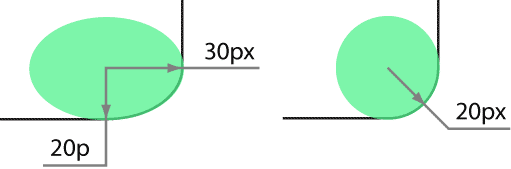
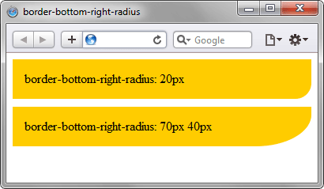

border-bottom-right-radius
Устанавливает радиус скругления правого нижнего уголка рамки. Если рамка не задана, то скругление также происходит и с фоном.
Краткая информация
| Значение по умолчанию | 0 |
|---|---|
| Наследуется | Нет |
| Применяется | Ко всем элементам |
Синтаксис
border-bottom-right-radius: [значение | проценты] [значение | проценты]Значения
В качестве радиуса указывается любое допустимое в CSS значение (px, cm, in, em и др.), а также проценты, в этом случае радиус скругления считается от ширины блока.
Необязательное второе значение предназначено для создания эллиптического уголка, первое значение при этом устанавливает радиус по горизонтали, а второе — радиус по вертикали (рис. 1).

Рис. 1. Радиус скругления для создания разных типов уголков
Пример
<!DOCTYPE html>
<html>
<head>
<meta charset="utf-8">
<title>border-bottom-right-radius</title>
<style>
.radius {
background: #fc0;
padding: 15px;
margin-bottom: 10px;
}
</style>
</head>
<body>
<div style="border-bottom-right-radius: 20px" class="radius">
border-bottom-right-radius: 20px
</div>
<div style="border-bottom-right-radius: 70px 40px" class="radius">
border-bottom-right-radius: 70px 40px
</div>
</body>
</html>Результат данного примера показан на рис. 2.

Рис. 2. Радиус скругления в браузере Safari
Объектная модель
Объект.style.borderBottomRightRadius
Примечание
Chrome до версии 4.0, Safari до версии 5.0 и Android до версии 2.1 используют нестандартное свойство -webkit-border-top-left-radius.
Firefox до версии 4.0 использует нестандартное свойство -moz-border-radius-topleft.
Спецификация
| Спецификация | Статус |
|---|---|
| CSS Backgrounds and Borders Module Level 3 | Возможная рекомендация |
Браузеры
| Internet Explorer | Chrome | Opera | Safari | Firefox | ||||
| Базовый синтаксис | 9 | 1 | 4 | 10.5 | 3 | 5 | 1 | 4 |
| Проценты | 9 | 4 | 10.5 | 5 | 4 | |||
| Эллиптические уголки | 9 | 1 | 10.5 | 3 | 3.5 | |||
| Android | Firefox Mobile | Opera Mobile | Safari Mobile | ||||
| Базовый синтаксис | 1 | 2.1 | 1 | 4 | 10.5 | 3 | 5 |
| Проценты | 2.1 | 4 | 10.5 | 5 | |||
| Эллиптические уголки | 2.1 | 3.5 | 10.5 | 3 | |||